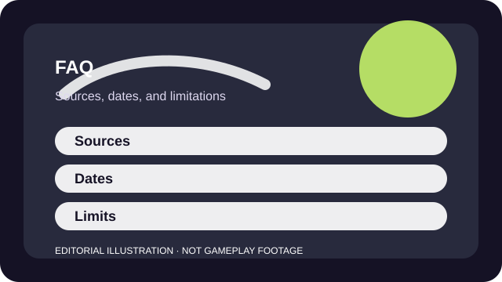

HOW TO READ THE SITE
Use the FAQ as the frame around the profiles
The fit profiles answer install decisions. The guides solve recurring setup or safety problems. The blog explains the editorial model and the decisions that sit above any one game page.
The FAQ exists so you do not have to infer the method. If a page is sourced, it should say so. If a date moved, it should mean something. If a game can change faster than an editorial page, that limit should stay visible instead of being hidden in the tone.

COMMON QUESTIONS
Questions about profiles, updates, and limits
What is a game fit profile?
A fit profile is a sourced editorial page built to answer whether a game matches a player's time, platform, budget, and social preferences. It is not a scored hands-on review.
Why do the URLs still live under /reviews/?
The old URLs were preserved for compatibility, but the pages now behave like before-you-play profiles rather than generic review templates.
Do these pages claim hands-on testing?
Not unless a page explicitly says what was tested and when. The generated profiles in this overhaul rely on official sources and careful, defensible general product knowledge.
What do the published and checked dates mean?
Published marks this editorial version. Checked tells you when the visible source-backed facts on the page were last reviewed together.
How do you handle changing live-service details?
Each profile links to official sources, names what can change, and uses the checked date as the boundary of the editorial claim.
Why do free games still get spending warnings?
Because cost risk is part of fit. A free download can still create banner, pass, pack, or convenience pressure that changes the recommendation.
Should families use these pages by themselves for child safety choices?
No. Use them as a starting point, then verify the current platform or game safety controls through official parental and account settings.
How can I request a correction?
The public correction route is not published yet in this static preview. When it exists, it will be listed on the About page.
SOURCES AND LIMITS
Where the policy questions point next
- This static preview does not yet publish a live public correction inbox.
- Official game terms can change after the checked date on any one profile.
- Profiles are sourced editorial decisions, not hands-on testing claims unless stated otherwise.